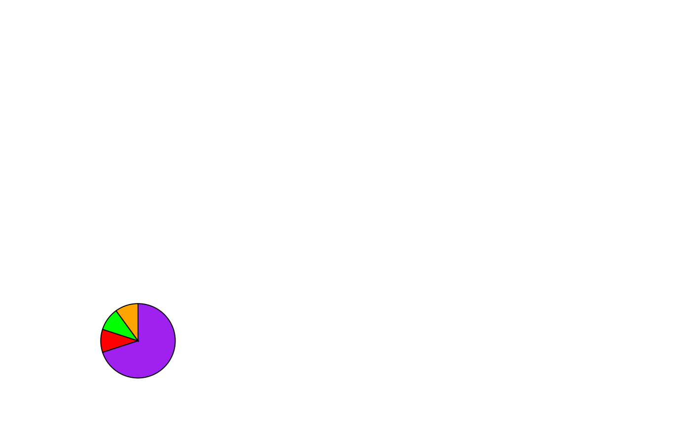
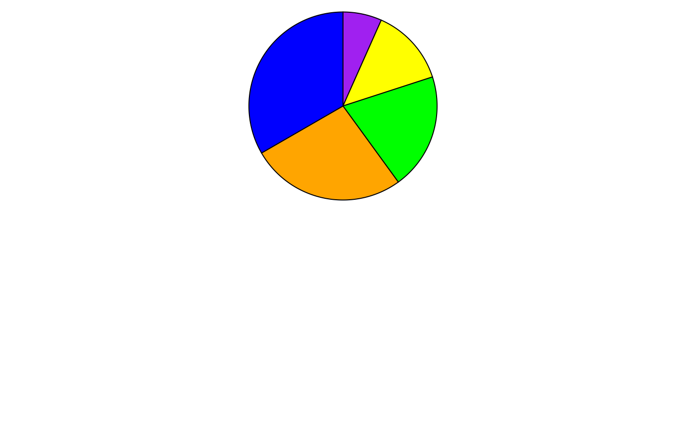
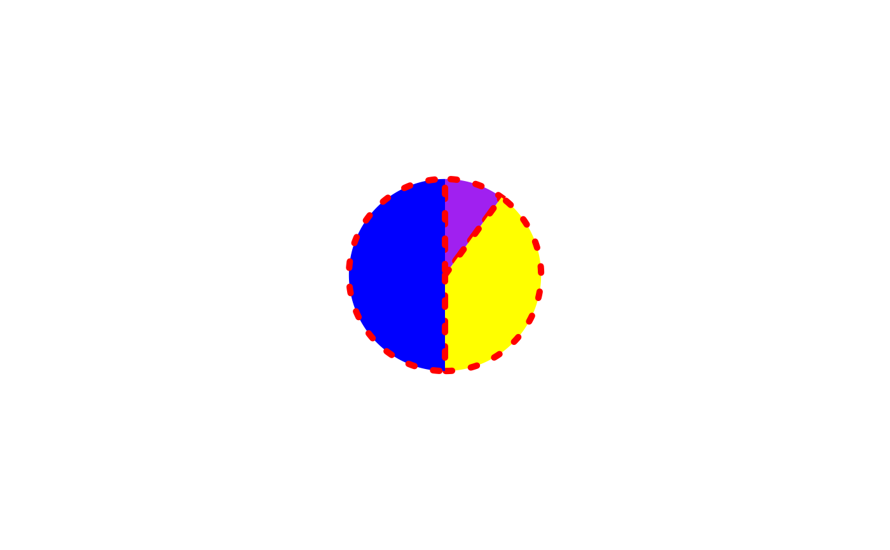

This function creates a pie-chart glyph. The proportions of the different slices are calculated automatically using the numbers in the values parameter.
Usage
pieGrob(
x = 0.5,
y = 0.5,
values,
radius = 1,
radius_unit = "cm",
edges = 360,
col = "black",
fill = NA,
lwd = 1,
lty = 1,
alpha = 1,
default.units = "npc"
)Arguments
- x
A number or unit object specifying x-location of pie chart
- y
A number or unit object specifying y-location of pie chart
- values
A numeric vector specifying the values of the different slices of the pie chart
- radius
A number specifying the radius of the pie-chart
- radius_unit
Character string specifying the unit for the radius of the pie-chart
- edges
Number of edges which make up the circumference of the pie-chart (Increase for higher resolution)
- col
Character specifying the colour of the border between the pie slices
- fill
A character vector specifying the colour of the individual slices
- lwd
Line width of the pie borders
- lty
Linetype of the pie borders
- alpha
Number between 0 and 1 specifying the opacity of the pie-charts
- default.units
Change the default units for the position and radius of the pie-glyphs
Examples
library(grid)
grid.newpage()
p1 <- pieGrob(x = 0.2, y= 0.2,
values = c(.7,.1,.1,.1), radius = 1,
fill = c('purple','red','green','orange'))
grid.draw(p1)

## Change unit of radius
grid.newpage()
p2 <- pieGrob(x = 0.5, y= 0.75,
values = c(1,2,3,4,5), radius = 1,
radius_unit = 'in',
fill = c('purple','yellow','green','orange','blue'))
grid.draw(p2)

## Change border attributes
grid.newpage()
p3 <- pieGrob(x = 0.5, y= 0.5,
values = c(10, 40, 50), radius = 20,
radius_unit = 'mm',
col = 'red', lwd = 5, lty = 3,
fill = c('purple','yellow','blue'))
grid.draw(p3)
